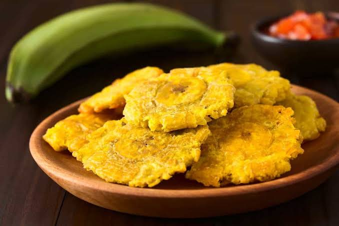

TOSTONES

Consiste en carne de res deshebrada cocinada a fuego lento en una salsa de tomate con vegetales y especias, y su nombre proviene del aspecto que tienen los jirones de carne, que recuerdan a un montón de trapos viejos.
COMO HACERLO
INGREDIENTES